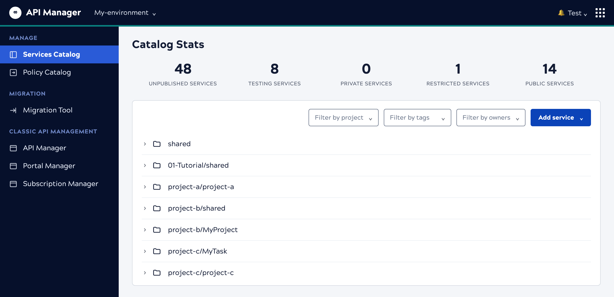

The Services catalog has a search box. It filters services by name and opens the folders holding a match. The page renders it invisible, so nobody can reach it. The dashed outline below marks where it sits.

A real capture, with the project names replaced. The dashed marker is an
overlay on this page: the control it marks renders in that space, but visibility: hidden means
the capture shows nothing there.
The Policy catalog, one nav item below, shows the same search control and it works. Both catalogs got search in the same change; only this page kept the style that hides it.
The catalog renders a search input, then sets visibility: hidden on it. The
behavior behind it is complete: typing filters the list to services whose name matches, and
every folder holding a match opens automatically.
The style dates from an earlier release, when the box was a placeholder with nothing behind it, and it was hidden on both catalogs on purpose. The change that built real search removed the style from the Policy catalog and left it on this page.
File as a defect against the Services catalog, separate from the UX findings: delete the inline style and confirm the control matches the Policy catalog's. The one-line fix answers the biggest complaint about this page — that there's no way to find a service by name.